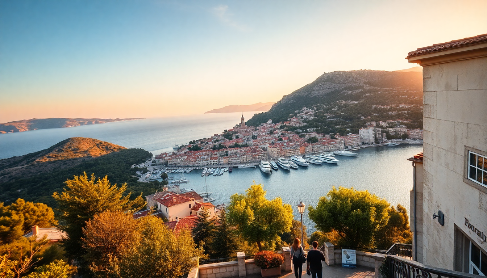

Best Time to Visit Croatia's Dalmatian Coast

I spent three weeks hopping between Dubrovnik, Split, Hvar, and Korcula across two different seasons, and the difference was night and day. This guide breaks down exactly when to go based on weather, crowds, and costs — no sugarcoating.
When is the best weather on the Dalmatian Coast?
July and August deliver the hottest, driest weather. Daytime highs hit 30–35°C (86–95°F), and the sea is warm enough for swimming without a wetsuit. But that heat comes with packed beaches and inflated prices.
I found late May and early June (and September) to be the sweet spot. In late May, we had 25°C days in Split, the Adriatic was swimmable by early June, and the crowds hadn’t arrived yet.
- Dubrovnik in July: 33°C, wall-to-wall people on the Stradun by 10am
- Hvar in September: 27°C, still warm for swimming, empty sunbeds at Hula Hula Beach Bar
- Korcula in early June: 24°C, pleasant for cycling to Pupnatska Luka beach
- Split in August: 35°C, air conditioning essential at Hotel Park Split
When should I visit to avoid crowds?
Avoid July and August if you dislike queues. Dubrovnik’s Old Town becomes a human river, and the cable car line at Srd Hill can stretch 45 minutes in peak season.
The shoulder months — May, June, and September — are where you want to be. In mid-September, I walked the Walls of Dubrovnik with maybe 20 other people total. Compare that to August, where you’re shuffling shoulder-to-shoulder.
- May: Ferry queues in Split are short; booked Kapetan Luka ferry to Hvar same-day
- September: Korcula’s Moreska Sword Dance shows still run but without the crush
- October: Dubrovnik’s Fort Lovrijenac was nearly empty, but some restaurants close mid-month
- June: Hvar’s Carpe Diem Beach had space for a lounger without booking a week ahead
What’s the cheapest time to visit?
Budget travelers should target April, May, or October. Accommodation prices drop 30–50% compared to July. In April, we booked a room at Hotel Adriatic in Split for €120/night — in August, same room was €250.
Ferry and catamaran tickets don’t fluctuate wildly, but off-peak means shorter lines at ticket counters. The Jadrolinija ferry from Split to Korcula was €8 in May versus €12 in high season.
- April: Hotel Kazbek in Dubrovnik was €90/night; August rate was €200
- October: Hotel Korsal on Korcula was half off, but the outdoor pool was closed
- May: Dinner at Konoba Mate in Korcula was €25 for two courses, no reservation needed
- Winter (Nov–Mar): Many hotels close; Hotel Bellevue in Dubrovnik stayed open but felt dead
Can I swim in the shoulder season?
Yes, but with limits. The Adriatic warms up slowly. In late May, the sea around Banje Beach in Dubrovnik was still chilly — around 18°C. By mid-June, it hit 22°C, comfortable for a good hour.
September is the best month for swimming after summer. Water temperatures stay around 24°C into early October. I swam at Stiniva Cove on Vis in early October and it was fine for a quick dip.
- May: Swim only if you’re tough; stick to Kašjuni Beach in Split (sheltered bay)
- June: Good at Dubovica Beach on Hvar; water was 21°C when I went
- September: Perfect at Pupnatska Luka on Korcula; 24°C, clear as glass
- October: Possible at Bacvice Beach in Split, but you’ll be out in 15 minutes
What about festivals and events?
Summer brings the big events, but they also bring price surges. Dubrovnik Summer Festival (July–August) fills the city with theatre and music, but expect packed streets and premium hotel rates.
I caught Hvar Summer Festival in late July — the open-air concerts at St. Stephen’s Square were fantastic, but I paid triple for my room at Hotel Podstine.
- Dubrovnik Summer Festival: Mid-July to late August; book Hotel Excelsior months ahead
- Split Summer Festival: July to mid-August; free performances at Peristil Square
- Korcula Sword Dance Festival: June to September; check exact dates at Korcula Town Museum
- St. Martin’s Day (November 11): Local wine tastings in Hvar; very low-key, no crowds
Is winter worth visiting?
Winter (November to March) is quiet and cheap, but many attractions and restaurants close. In January, Lokanda Peskarija in Split was open and half-empty, but most beach bars on Hvar were shuttered.
If you want to see Dubrovnik without tourists, January works. I walked the Stradun alone at 9am. But the Elaphiti Islands ferry runs on a skeleton schedule, and the weather is often grey and windy.
- Pros: €50–80 hotel rooms, empty Old Towns, local prices at Konoba Dubrava in Dubrovnik
- Cons: Many restaurants close; Hvar’s Pakleni Islands water taxis stop in November
- Best for: Cultural sightseeing, not swimming or island hopping
- Worst for: Beach lovers or anyone wanting a lively nightlife scene
FAQ
Is it better to visit Dubrovnik in May or September? Both are excellent, but I’d pick September. The sea is warmer (24°C vs 18°C in May), and the summer crowds have thinned. May is greener and cheaper, but you’ll want a wetsuit for swimming.
Can I island-hop in October? Yes, but with reduced ferry schedules. The Jadrolinija catamaran from Split to Hvar still runs daily in October, but the last boat leaves earlier. Some island restaurants close by mid-October, so call ahead.
When is the worst time to visit the Dalmatian Coast? August. The heat is oppressive, prices peak, and every beach and Old Town is overcrowded. If you can only travel in summer, choose late June or early September instead.
Conclusion
- May and September offer the best balance of good weather, fewer crowds, and reasonable prices — ideal for first-time visitors.
- July and August are for sun-seekers who don’t mind crowds and premium rates; book everything months in advance.
- April and October work for budget travelers and cultural sightseers, but swimming is limited.
- Winter is only for those who prioritize solitude over activities; many hotels and restaurants close.
- Always book ferries and catamarans early in summer — the Kapetan Luka and Jadrolinija lines sell out fast.